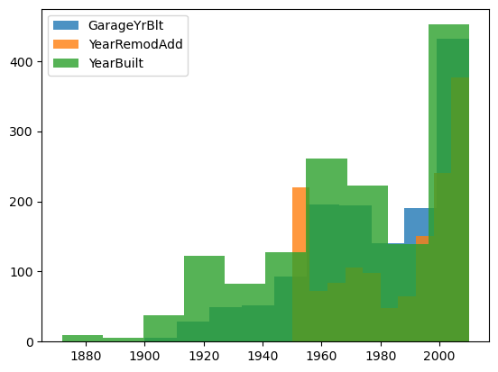
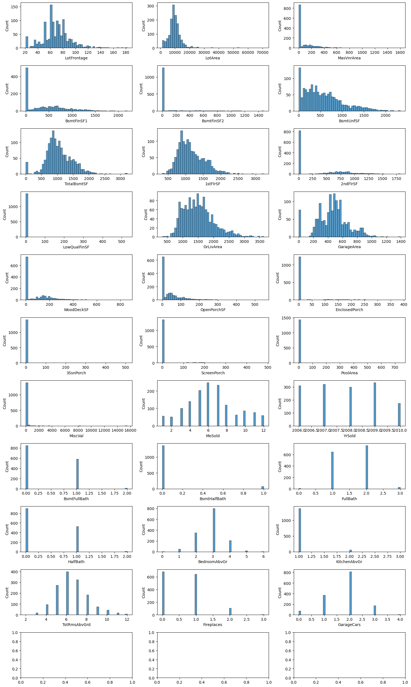

Practice Skills
Creative feature engineering
Advanced regression techniques like random forest and gradient boosting❓
导入数据#
import pandas as pd
import matplotlib.pyplot as plt
import numpy as np
import seaborn as sns
# sklearn
from sklearn.compose import ColumnTransformer
from sklearn.pipeline import make_pipeline
from sklearn.pipeline import Pipeline
from sklearn.preprocessing import StandardScaler, OneHotEncoder, OrdinalEncoder, FunctionTransformer,TargetEncoder,PolynomialFeatures
from sklearn.impute import SimpleImputer
# 各种模型
from sklearn.tree import DecisionTreeRegressor
from sklearn.linear_model import Lasso,LassoCV, Ridge,RidgeCV,ElasticNetCV, ElasticNet, LinearRegression,BayesianRidge
from sklearn.ensemble import RandomForestRegressor
from sklearn.model_selection import train_test_split,GridSearchCV
from sklearn.compose import TransformedTargetRegressor
---------------------------------------------------------------------------
ModuleNotFoundError Traceback (most recent call last)
Cell In[1], line 1
----> 1 import pandas as pd
2 import matplotlib.pyplot as plt
3 import numpy as np
ModuleNotFoundError: No module named 'pandas'
traindata = pd.read_csv('data/train.csv',index_col='Id')
# 同步读取后续修改， 只是test不能剔除异常行
testdata = pd.read_csv('data/test.csv',index_col='Id')
traindata.info()
<class 'pandas.core.frame.DataFrame'>
Index: 1460 entries, 1 to 1460
Data columns (total 80 columns):
# Column Non-Null Count Dtype
--- ------ -------------- -----
0 MSSubClass 1460 non-null int64
1 MSZoning 1460 non-null object
2 LotFrontage 1201 non-null float64
3 LotArea 1460 non-null int64
4 Street 1460 non-null object
5 Alley 91 non-null object
6 LotShape 1460 non-null object
7 LandContour 1460 non-null object
8 Utilities 1460 non-null object
9 LotConfig 1460 non-null object
10 LandSlope 1460 non-null object
11 Neighborhood 1460 non-null object
12 Condition1 1460 non-null object
13 Condition2 1460 non-null object
14 BldgType 1460 non-null object
15 HouseStyle 1460 non-null object
16 OverallQual 1460 non-null int64
17 OverallCond 1460 non-null int64
18 YearBuilt 1460 non-null int64
19 YearRemodAdd 1460 non-null int64
20 RoofStyle 1460 non-null object
21 RoofMatl 1460 non-null object
22 Exterior1st 1460 non-null object
23 Exterior2nd 1460 non-null object
24 MasVnrType 588 non-null object
25 MasVnrArea 1452 non-null float64
26 ExterQual 1460 non-null object
27 ExterCond 1460 non-null object
28 Foundation 1460 non-null object
29 BsmtQual 1423 non-null object
30 BsmtCond 1423 non-null object
31 BsmtExposure 1422 non-null object
32 BsmtFinType1 1423 non-null object
33 BsmtFinSF1 1460 non-null int64
34 BsmtFinType2 1422 non-null object
35 BsmtFinSF2 1460 non-null int64
36 BsmtUnfSF 1460 non-null int64
37 TotalBsmtSF 1460 non-null int64
38 Heating 1460 non-null object
39 HeatingQC 1460 non-null object
40 CentralAir 1460 non-null object
41 Electrical 1459 non-null object
42 1stFlrSF 1460 non-null int64
43 2ndFlrSF 1460 non-null int64
44 LowQualFinSF 1460 non-null int64
45 GrLivArea 1460 non-null int64
46 BsmtFullBath 1460 non-null int64
47 BsmtHalfBath 1460 non-null int64
48 FullBath 1460 non-null int64
49 HalfBath 1460 non-null int64
50 BedroomAbvGr 1460 non-null int64
51 KitchenAbvGr 1460 non-null int64
52 KitchenQual 1460 non-null object
53 TotRmsAbvGrd 1460 non-null int64
54 Functional 1460 non-null object
55 Fireplaces 1460 non-null int64
56 FireplaceQu 770 non-null object
57 GarageType 1379 non-null object
58 GarageYrBlt 1379 non-null float64
59 GarageFinish 1379 non-null object
60 GarageCars 1460 non-null int64
61 GarageArea 1460 non-null int64
62 GarageQual 1379 non-null object
63 GarageCond 1379 non-null object
64 PavedDrive 1460 non-null object
65 WoodDeckSF 1460 non-null int64
66 OpenPorchSF 1460 non-null int64
67 EnclosedPorch 1460 non-null int64
68 3SsnPorch 1460 non-null int64
69 ScreenPorch 1460 non-null int64
70 PoolArea 1460 non-null int64
71 PoolQC 7 non-null object
72 Fence 281 non-null object
73 MiscFeature 54 non-null object
74 MiscVal 1460 non-null int64
75 MoSold 1460 non-null int64
76 YrSold 1460 non-null int64
77 SaleType 1460 non-null object
78 SaleCondition 1460 non-null object
79 SalePrice 1460 non-null int64
dtypes: float64(3), int64(34), object(43)
memory usage: 923.9+ KB
traindata.describe(include='all')
| MSSubClass | MSZoning | LotFrontage | LotArea | Street | Alley | LotShape | LandContour | Utilities | LotConfig | ... | PoolArea | PoolQC | Fence | MiscFeature | MiscVal | MoSold | YrSold | SaleType | SaleCondition | SalePrice | |
|---|---|---|---|---|---|---|---|---|---|---|---|---|---|---|---|---|---|---|---|---|---|
| count | 1460.000000 | 1460 | 1201.000000 | 1460.000000 | 1460 | 91 | 1460 | 1460 | 1460 | 1460 | ... | 1460.000000 | 7 | 281 | 54 | 1460.000000 | 1460.000000 | 1460.000000 | 1460 | 1460 | 1460.000000 |
| unique | NaN | 5 | NaN | NaN | 2 | 2 | 4 | 4 | 2 | 5 | ... | NaN | 3 | 4 | 4 | NaN | NaN | NaN | 9 | 6 | NaN |
| top | NaN | RL | NaN | NaN | Pave | Grvl | Reg | Lvl | AllPub | Inside | ... | NaN | Gd | MnPrv | Shed | NaN | NaN | NaN | WD | Normal | NaN |
| freq | NaN | 1151 | NaN | NaN | 1454 | 50 | 925 | 1311 | 1459 | 1052 | ... | NaN | 3 | 157 | 49 | NaN | NaN | NaN | 1267 | 1198 | NaN |
| mean | 56.897260 | NaN | 70.049958 | 10516.828082 | NaN | NaN | NaN | NaN | NaN | NaN | ... | 2.758904 | NaN | NaN | NaN | 43.489041 | 6.321918 | 2007.815753 | NaN | NaN | 180921.195890 |
| std | 42.300571 | NaN | 24.284752 | 9981.264932 | NaN | NaN | NaN | NaN | NaN | NaN | ... | 40.177307 | NaN | NaN | NaN | 496.123024 | 2.703626 | 1.328095 | NaN | NaN | 79442.502883 |
| min | 20.000000 | NaN | 21.000000 | 1300.000000 | NaN | NaN | NaN | NaN | NaN | NaN | ... | 0.000000 | NaN | NaN | NaN | 0.000000 | 1.000000 | 2006.000000 | NaN | NaN | 34900.000000 |
| 25% | 20.000000 | NaN | 59.000000 | 7553.500000 | NaN | NaN | NaN | NaN | NaN | NaN | ... | 0.000000 | NaN | NaN | NaN | 0.000000 | 5.000000 | 2007.000000 | NaN | NaN | 129975.000000 |
| 50% | 50.000000 | NaN | 69.000000 | 9478.500000 | NaN | NaN | NaN | NaN | NaN | NaN | ... | 0.000000 | NaN | NaN | NaN | 0.000000 | 6.000000 | 2008.000000 | NaN | NaN | 163000.000000 |
| 75% | 70.000000 | NaN | 80.000000 | 11601.500000 | NaN | NaN | NaN | NaN | NaN | NaN | ... | 0.000000 | NaN | NaN | NaN | 0.000000 | 8.000000 | 2009.000000 | NaN | NaN | 214000.000000 |
| max | 190.000000 | NaN | 313.000000 | 215245.000000 | NaN | NaN | NaN | NaN | NaN | NaN | ... | 738.000000 | NaN | NaN | NaN | 15500.000000 | 12.000000 | 2010.000000 | NaN | NaN | 755000.000000 |
11 rows × 80 columns
traindata.dtypes
MSSubClass int64
MSZoning object
LotFrontage float64
LotArea int64
Street object
...
MoSold int64
YrSold int64
SaleType object
SaleCondition object
SalePrice int64
Length: 80, dtype: object
预处理：#
列 分类、聚合。
行：异常值剔除
数值数据#
有数值意义：日期，大小
无数值意义：分类
traindata.select_dtypes(include=['float64','int64'])
| MSSubClass | LotFrontage | LotArea | OverallQual | OverallCond | YearBuilt | YearRemodAdd | MasVnrArea | BsmtFinSF1 | BsmtFinSF2 | ... | WoodDeckSF | OpenPorchSF | EnclosedPorch | 3SsnPorch | ScreenPorch | PoolArea | MiscVal | MoSold | YrSold | SalePrice | |
|---|---|---|---|---|---|---|---|---|---|---|---|---|---|---|---|---|---|---|---|---|---|
| Id | |||||||||||||||||||||
| 1 | 60 | 65.0 | 8450 | 7 | 5 | 2003 | 2003 | 196.0 | 706 | 0 | ... | 0 | 61 | 0 | 0 | 0 | 0 | 0 | 2 | 2008 | 208500 |
| 2 | 20 | 80.0 | 9600 | 6 | 8 | 1976 | 1976 | 0.0 | 978 | 0 | ... | 298 | 0 | 0 | 0 | 0 | 0 | 0 | 5 | 2007 | 181500 |
| 3 | 60 | 68.0 | 11250 | 7 | 5 | 2001 | 2002 | 162.0 | 486 | 0 | ... | 0 | 42 | 0 | 0 | 0 | 0 | 0 | 9 | 2008 | 223500 |
| 4 | 70 | 60.0 | 9550 | 7 | 5 | 1915 | 1970 | 0.0 | 216 | 0 | ... | 0 | 35 | 272 | 0 | 0 | 0 | 0 | 2 | 2006 | 140000 |
| 5 | 60 | 84.0 | 14260 | 8 | 5 | 2000 | 2000 | 350.0 | 655 | 0 | ... | 192 | 84 | 0 | 0 | 0 | 0 | 0 | 12 | 2008 | 250000 |
| ... | ... | ... | ... | ... | ... | ... | ... | ... | ... | ... | ... | ... | ... | ... | ... | ... | ... | ... | ... | ... | ... |
| 1456 | 60 | 62.0 | 7917 | 6 | 5 | 1999 | 2000 | 0.0 | 0 | 0 | ... | 0 | 40 | 0 | 0 | 0 | 0 | 0 | 8 | 2007 | 175000 |
| 1457 | 20 | 85.0 | 13175 | 6 | 6 | 1978 | 1988 | 119.0 | 790 | 163 | ... | 349 | 0 | 0 | 0 | 0 | 0 | 0 | 2 | 2010 | 210000 |
| 1458 | 70 | 66.0 | 9042 | 7 | 9 | 1941 | 2006 | 0.0 | 275 | 0 | ... | 0 | 60 | 0 | 0 | 0 | 0 | 2500 | 5 | 2010 | 266500 |
| 1459 | 20 | 68.0 | 9717 | 5 | 6 | 1950 | 1996 | 0.0 | 49 | 1029 | ... | 366 | 0 | 112 | 0 | 0 | 0 | 0 | 4 | 2010 | 142125 |
| 1460 | 20 | 75.0 | 9937 | 5 | 6 | 1965 | 1965 | 0.0 | 830 | 290 | ... | 736 | 68 | 0 | 0 | 0 | 0 | 0 | 6 | 2008 | 147500 |
1460 rows × 37 columns
numeric_cols = ['LotFrontage','LotArea','MasVnrArea','BsmtFinSF1','BsmtFinSF2','BsmtUnfSF','TotalBsmtSF','1stFlrSF','2ndFlrSF','LowQualFinSF','GrLivArea','GarageArea',
'WoodDeckSF','OpenPorchSF','EnclosedPorch','3SsnPorch','ScreenPorch','PoolArea',
'MiscVal','MoSold' ,'YrSold',
'BsmtFullBath','BsmtHalfBath','FullBath','HalfBath','BedroomAbvGr','KitchenAbvGr','TotRmsAbvGrd','Fireplaces',
'GarageCars']
numeric_missing_stat = traindata[numeric_cols].isnull().sum()
numeric_missing_stat[numeric_missing_stat>0]
LotFrontage 259
MasVnrArea 8
dtype: int64
numeric_missing_stat_test = testdata[numeric_cols].isnull().sum()
numeric_missing_stat_test[numeric_missing_stat_test>0]
LotFrontage 227
MasVnrArea 15
BsmtFinSF1 1
BsmtFinSF2 1
BsmtUnfSF 1
TotalBsmtSF 1
GarageArea 1
BsmtFullBath 2
BsmtHalfBath 2
GarageCars 1
dtype: int64
1.日期#
转换为具有数值意义的
'GarageYrBlt','YearRemodAdd','YearBuilt'
plt.hist(traindata.GarageYrBlt, alpha=0.8,label='GarageYrBlt')
plt.hist(traindata.YearRemodAdd, alpha=0.8,label='YearRemodAdd')
plt.hist(traindata.YearBuilt, alpha=0.8,label='YearBuilt')
plt.legend()
<matplotlib.legend.Legend at 0x1c506b4d1f0>

空值填充 : 完整起见应该每一列都提供空值填充。竞赛而言就是 填充需要的。
2. 数值#
numeric_cols
['LotFrontage',
'LotArea',
'MasVnrArea',
'BsmtFinSF1',
'BsmtFinSF2',
'BsmtUnfSF',
'TotalBsmtSF',
'1stFlrSF',
'2ndFlrSF',
'LowQualFinSF',
'GrLivArea',
'GarageArea',
'WoodDeckSF',
'OpenPorchSF',
'EnclosedPorch',
'3SsnPorch',
'ScreenPorch',
'PoolArea',
'MiscVal',
'MoSold',
'YrSold',
'BsmtFullBath',
'BsmtHalfBath',
'FullBath',
'HalfBath',
'BedroomAbvGr',
'KitchenAbvGr',
'TotRmsAbvGrd',
'Fireplaces',
'GarageCars']
numeric_missing_stat_test = testdata[numeric_cols].isnull().sum()
numeric_missing_stat_test[numeric_missing_stat_test>0]
LotFrontage 227
MasVnrArea 15
BsmtFinSF1 1
BsmtFinSF2 1
BsmtUnfSF 1
TotalBsmtSF 1
GarageArea 1
BsmtFullBath 2
BsmtHalfBath 2
GarageCars 1
dtype: int64
numeric_missing_stat = traindata[numeric_cols].isnull().sum()
numeric_missing_stat[numeric_missing_stat>0]
LotFrontage 259
MasVnrArea 8
dtype: int64
类别数据#
无序类别：One-Hot Encoding，Target Encoding， label encoding
有序类别： orignal encoding。 有的1-10有正常顺序不需要编码
traindata.select_dtypes(include=['object']).columns
Index(['MSZoning', 'Street', 'Alley', 'LotShape', 'LandContour', 'Utilities',
'LotConfig', 'LandSlope', 'Neighborhood', 'Condition1', 'Condition2',
'BldgType', 'HouseStyle', 'RoofStyle', 'RoofMatl', 'Exterior1st',
'Exterior2nd', 'MasVnrType', 'ExterQual', 'ExterCond', 'Foundation',
'BsmtQual', 'BsmtCond', 'BsmtExposure', 'BsmtFinType1', 'BsmtFinType2',
'Heating', 'HeatingQC', 'CentralAir', 'Electrical', 'KitchenQual',
'Functional', 'FireplaceQu', 'GarageType', 'GarageFinish', 'GarageQual',
'GarageCond', 'PavedDrive', 'PoolQC', 'Fence', 'MiscFeature',
'SaleType', 'SaleCondition'],
dtype='object')
categorical_cols = ['MSSubClass','OverallQual','OverallCond',
'CentralAir',
'MSZoning','Street','LotShape','LandContour','Utilities','LotConfig','LandSlope',
'Neighborhood','Condition1','Condition2','BldgType','HouseStyle','RoofStyle','RoofMatl','Exterior1st',
'Exterior2nd','MasVnrType','Foundation','Heating','Electrical','Functional',
'GarageType','GarageFinish','PavedDrive','Fence','MiscFeature','SaleType','SaleCondition'
]
traindata['Alley'].isnull().sum()
testdata['Alley'].isnull().sum() # TOO much null
np.int64(1352)
# cols 👆
# data.drop('Alley',axis=1,inplace=True)
# testdata.drop('Alley',axis=1,inplace=True)
traindata.CentralAir.value_counts()
CentralAir
Y 1365
N 95
Name: count, dtype: int64
traindata[['MSSubClass','OverallQual','OverallCond']]
| MSSubClass | OverallQual | OverallCond | |
|---|---|---|---|
| Id | |||
| 1 | 60 | 7 | 5 |
| 2 | 20 | 6 | 8 |
| 3 | 60 | 7 | 5 |
| 4 | 70 | 7 | 5 |
| 5 | 60 | 8 | 5 |
| ... | ... | ... | ... |
| 1456 | 60 | 6 | 5 |
| 1457 | 20 | 6 | 6 |
| 1458 | 70 | 7 | 9 |
| 1459 | 20 | 5 | 6 |
| 1460 | 20 | 5 | 6 |
1460 rows × 3 columns
ordinal_cols = ['ExterQual', 'ExterCond', 'BsmtQual', 'BsmtCond', 'BsmtExposure', 'BsmtFinType1', 'BsmtFinType2', 'HeatingQC', 'KitchenQual', 'FireplaceQu', 'GarageQual', 'GarageCond', 'PoolQC']
traindata[ordinal_cols].isnull().sum()
ExterQual 0
ExterCond 0
BsmtQual 37
BsmtCond 37
BsmtExposure 38
BsmtFinType1 37
BsmtFinType2 38
HeatingQC 0
KitchenQual 0
FireplaceQu 690
GarageQual 81
GarageCond 81
PoolQC 1453
dtype: int64
空值填充#
数值数据
异常值剔除#
ids = [598, 955, 935, 1299, 250, 314, 336, 707, 379, 1183, 692, 186, 441, 186, 524, 739, 598, 955, 636, 1062, 1191, 496, 198, 1338]
traindata = traindata.drop(ids, axis=0)
fig,axes = plt.subplots(len(numeric_cols)//3 + 1, 3, figsize= (15,25))
axes = axes.ravel()
for i,col in enumerate(numeric_cols):
sns.histplot(traindata[col], ax = axes[i], bins=50,label=f"{col}")
fig.tight_layout()

确定数据集列，构建XY#
traindata_x=traindata[numeric_cols+ordinal_cols+categorical_cols]
traindata_y= traindata.SalePrice
print(traindata_x.shape)
(1439, 75)
管道：数据转换#
# 函数保持 DataFrame 操作
def fix_garage_yr_blt(df):
df['GarageYrBlt'] = np.maximum(df['GarageYrBlt'], df['YearBuilt'])
return df
def add_features(df):
df['HouseRawYear'] = df['YearRemodAdd'] - df['YearBuilt']
df['HouseGarageYear'] = df['GarageYrBlt'] - df['YearBuilt']
df.drop(columns=['YearRemodAdd','YearBuilt','GarageYrBlt'],inplace=True)
df['HouseRawYear'] = round(df['HouseRawYear']).astype(int)
df['HouseGarageYear'] = round(df['HouseGarageYear']).astype(int)
return df.values
date_cols = ['GarageYrBlt','YearBuilt','YearRemodAdd']
date_pipeline = Pipeline(steps=[
('imputer', SimpleImputer(strategy='median')),
('to_dataframe', FunctionTransformer(lambda X: pd.DataFrame(X, columns=date_cols), validate=False)),
('fix_garage_yr', FunctionTransformer(fix_garage_yr_blt, validate=False)),
('add_features', FunctionTransformer(add_features, validate=False)),
('log_transform', FunctionTransformer(np.log1p, validate=False)), # 取对数
('std_scaler', StandardScaler()) # 标准化
])
date_pipeline.fit_transform(traindata[date_cols])
array([[-0.75318785, -0.49972714],
[-0.75318785, -0.49972714],
[-0.33120657, -0.49972714],
...,
[ 1.79743332, -0.49972714],
[ 1.59074466, -0.49972714],
[-0.75318785, -0.49972714]], shape=(1439, 2))
numeric_pipeline = Pipeline(steps=[
('imputer', SimpleImputer(strategy='median')), # 填充缺失值
('log_transform', FunctionTransformer(np.log1p, validate=False, feature_names_out="one-to-one")), # 取对数
('std_scaler', StandardScaler()) # 标准化
])
numeric_pipeline.fit_transform(traindata[numeric_cols])
array([[-0.06246848, -0.11160869, 1.21029479, ..., 0.9700246 ,
-1.01014243, 0.39701995],
[ 0.6069953 , 0.14971436, -0.80517363, ..., -0.2188955 ,
0.75910161, 0.39701995],
[ 0.08284235, 0.47454859, 1.13802092, ..., -0.2188955 ,
0.75910161, 0.39701995],
...,
[-0.01331033, 0.02707172, -0.80517363, ..., 1.46846488,
1.79404302, -0.88068783],
[ 0.08284235, 0.17452415, -0.80517363, ..., -0.94815264,
-1.01014243, -0.88068783],
[ 0.39871115, 0.22037658, -0.80517363, ..., -0.2188955 ,
-1.01014243, -0.88068783]], shape=(1439, 30))
categorical_pipeline = Pipeline(steps=[
('onehot_encoder', OneHotEncoder(handle_unknown='ignore',sparse_output=False)) # 使用 OneHotEncoder
])
categorical_pipeline.fit_transform(traindata[categorical_cols])
array([[0., 0., 0., ..., 0., 1., 0.],
[1., 0., 0., ..., 0., 1., 0.],
[0., 0., 0., ..., 0., 1., 0.],
...,
[0., 0., 0., ..., 0., 1., 0.],
[1., 0., 0., ..., 0., 1., 0.],
[1., 0., 0., ..., 0., 1., 0.]], shape=(1439, 228))
# 对有序类别进行编码
ordinal_pipeline = Pipeline(steps=[
('imputer', SimpleImputer(strategy='constant', fill_value='NA')), # 填充缺失值
('ordinal_encoder', OrdinalEncoder(handle_unknown='use_encoded_value', unknown_value=-1)) # 使用 OrdinalEncoder
])
ordinal_pipeline.fit_transform(traindata[ordinal_cols])
array([[2., 4., 2., ..., 5., 5., 2.],
[3., 4., 2., ..., 5., 5., 2.],
[2., 4., 2., ..., 5., 5., 2.],
...,
[0., 2., 4., ..., 5., 5., 2.],
[3., 4., 4., ..., 5., 5., 2.],
[2., 4., 4., ..., 5., 5., 2.]], shape=(1439, 13))
preprocessor = ColumnTransformer(
transformers=[
#('date',date_pipeline,date_cols),
('numeric', numeric_pipeline, numeric_cols), # 数值型处理
('ordianl', ordinal_pipeline, ordinal_cols), # 有序类别处理
('categoric', categorical_pipeline, categorical_cols) # 无序类别处理
]
)
训练#
model_lasso = make_pipeline(
preprocessor,
TransformedTargetRegressor(
regressor=LassoCV(cv=20, max_iter=5000),
func=np.log1p, # 对 y 应用的对数转换
inverse_func=np.expm1 # 预测时反转
)
)
model_en = make_pipeline(
preprocessor,
TransformedTargetRegressor(
regressor=ElasticNetCV(cv=20,l1_ratio=0.5),
func=np.log1p, # 对 y 应用的对数转换
inverse_func=np.expm1 # 预测时反转
)
)
model_ridge = make_pipeline(
preprocessor,
TransformedTargetRegressor(
regressor=RidgeCV(cv=20,),
func=np.log1p, # 对 y 应用的对数转换
inverse_func=np.expm1 # 预测时反转
)
)
model_poly_linear = make_pipeline(
preprocessor,
PolynomialFeatures(degree=2),
TransformedTargetRegressor(
regressor=LinearRegression(fit_intercept=False),
func=np.log1p, # 对 y 应用的对数转换
inverse_func=np.expm1 # 预测时反转
)
)
model_poly_ridge = make_pipeline(
preprocessor,
PolynomialFeatures(degree=2),
TransformedTargetRegressor(
regressor=RidgeCV(cv=20),
func=np.log1p, # 对 y 应用的对数转换
inverse_func=np.expm1 # 预测时反转
)
)
model_bayesian_ridge = make_pipeline(
preprocessor,
TransformedTargetRegressor(
regressor=BayesianRidge(),
func=np.log1p, # 对 y 应用的对数转换
inverse_func=np.expm1 # 预测时反转
)
)
model_dtree = make_pipeline(
preprocessor,
TransformedTargetRegressor(
regressor=DecisionTreeRegressor(
max_depth=10,
min_samples_leaf=2,
min_samples_split=10,
),
func=np.log1p, # 对 y 应用的对数转换
inverse_func=np.expm1 # 预测时反转
)
)
# CV decision tree📌
models = {
#'LassoCV':model_lasso,
#'Elastic-Net':model_en,
#'RidgeCV':model_ridge,
#'Poly Linear':model_poly_linear,
#'Poly Ridge':model_poly_ridge,
#'Bayesian Ridge':model_bayesian_ridge,
'Decision Tree Regression':model_dtree,
}
X_train, X_test, y_train, y_test = train_test_split(traindata_x,traindata_y,random_state=42,test_size=0.2)
# linear model
import time
for name,m in models.items():
t1 = time.time()
m.fit(X_train,y_train)
print(f"{name} has trained. {(time.time() - t1 ):.2f} s")
Decision Tree Regression has trained. 0.08 s
for name,m in models.items():
print(f'{name} R^2 : {m.score(X_test, y_test) : .3f}')
Decision Tree Regression R^2 : 0.757
coef观测
coefs = model[-1].regressor_.coef_
coefs.shape
---------------------------------------------------------------------------
NameError Traceback (most recent call last)
Cell In[110], line 1
----> 1 coefs = model[-1].regressor_.coef_
2 coefs.shape
NameError: name 'model' is not defined
coefs[coefs==0].shape
(150,)
model
Pipeline(steps=[('columntransformer',
ColumnTransformer(transformers=[('numeric',
Pipeline(steps=[('imputer',
SimpleImputer(strategy='median')),
('log_transform',
FunctionTransformer(feature_names_out='one-to-one',
func=<ufunc 'log1p'>)),
('std_scaler',
StandardScaler())]),
['LotFrontage', 'LotArea',
'MasVnrArea', 'BsmtFinSF1',
'BsmtFinSF2', 'BsmtUnfSF',
'TotalBsm...
'BldgType', 'HouseStyle',
'RoofStyle', 'RoofMatl',
'Exterior1st', 'Exterior2nd',
'MasVnrType', 'Foundation',
'Heating', 'Electrical',
'Functional', 'GarageType',
'GarageFinish', 'PavedDrive',
'Fence', 'MiscFeature', ...])])),
('transformedtargetregressor',
TransformedTargetRegressor(func=<ufunc 'log1p'>,
inverse_func=<ufunc 'expm1'>,
regressor=LassoCV(cv=20,
max_iter=5000)))])In a Jupyter environment, please rerun this cell to show the HTML representation or trust the notebook. On GitHub, the HTML representation is unable to render, please try loading this page with nbviewer.org.
Pipeline(steps=[('columntransformer',
ColumnTransformer(transformers=[('numeric',
Pipeline(steps=[('imputer',
SimpleImputer(strategy='median')),
('log_transform',
FunctionTransformer(feature_names_out='one-to-one',
func=<ufunc 'log1p'>)),
('std_scaler',
StandardScaler())]),
['LotFrontage', 'LotArea',
'MasVnrArea', 'BsmtFinSF1',
'BsmtFinSF2', 'BsmtUnfSF',
'TotalBsm...
'BldgType', 'HouseStyle',
'RoofStyle', 'RoofMatl',
'Exterior1st', 'Exterior2nd',
'MasVnrType', 'Foundation',
'Heating', 'Electrical',
'Functional', 'GarageType',
'GarageFinish', 'PavedDrive',
'Fence', 'MiscFeature', ...])])),
('transformedtargetregressor',
TransformedTargetRegressor(func=<ufunc 'log1p'>,
inverse_func=<ufunc 'expm1'>,
regressor=LassoCV(cv=20,
max_iter=5000)))])ColumnTransformer(transformers=[('numeric',
Pipeline(steps=[('imputer',
SimpleImputer(strategy='median')),
('log_transform',
FunctionTransformer(feature_names_out='one-to-one',
func=<ufunc 'log1p'>)),
('std_scaler',
StandardScaler())]),
['LotFrontage', 'LotArea', 'MasVnrArea',
'BsmtFinSF1', 'BsmtFinSF2', 'BsmtUnfSF',
'TotalBsmtSF', '1stFlrSF', '2ndFlrSF',
'LowQualFi...
['MSSubClass', 'OverallQual', 'OverallCond',
'CentralAir', 'MSZoning', 'Street',
'LotShape', 'LandContour', 'Utilities',
'LotConfig', 'LandSlope', 'Neighborhood',
'Condition1', 'Condition2', 'BldgType',
'HouseStyle', 'RoofStyle', 'RoofMatl',
'Exterior1st', 'Exterior2nd', 'MasVnrType',
'Foundation', 'Heating', 'Electrical',
'Functional', 'GarageType', 'GarageFinish',
'PavedDrive', 'Fence', 'MiscFeature', ...])])['LotFrontage', 'LotArea', 'MasVnrArea', 'BsmtFinSF1', 'BsmtFinSF2', 'BsmtUnfSF', 'TotalBsmtSF', '1stFlrSF', '2ndFlrSF', 'LowQualFinSF', 'GrLivArea', 'GarageArea', 'WoodDeckSF', 'OpenPorchSF', 'EnclosedPorch', '3SsnPorch', 'ScreenPorch', 'PoolArea', 'MiscVal', 'MoSold', 'YrSold', 'BsmtFullBath', 'BsmtHalfBath', 'FullBath', 'HalfBath', 'BedroomAbvGr', 'KitchenAbvGr', 'TotRmsAbvGrd', 'Fireplaces', 'GarageCars']
SimpleImputer(strategy='median')
FunctionTransformer(feature_names_out='one-to-one', func=<ufunc 'log1p'>)
StandardScaler()
['ExterQual', 'ExterCond', 'BsmtQual', 'BsmtCond', 'BsmtExposure', 'BsmtFinType1', 'BsmtFinType2', 'HeatingQC', 'KitchenQual', 'FireplaceQu', 'GarageQual', 'GarageCond', 'PoolQC']
SimpleImputer(fill_value='NA', strategy='constant')
OrdinalEncoder(handle_unknown='use_encoded_value', unknown_value=-1)
['MSSubClass', 'OverallQual', 'OverallCond', 'CentralAir', 'MSZoning', 'Street', 'LotShape', 'LandContour', 'Utilities', 'LotConfig', 'LandSlope', 'Neighborhood', 'Condition1', 'Condition2', 'BldgType', 'HouseStyle', 'RoofStyle', 'RoofMatl', 'Exterior1st', 'Exterior2nd', 'MasVnrType', 'Foundation', 'Heating', 'Electrical', 'Functional', 'GarageType', 'GarageFinish', 'PavedDrive', 'Fence', 'MiscFeature', 'SaleType', 'SaleCondition']
OneHotEncoder(handle_unknown='ignore', sparse_output=False)
TransformedTargetRegressor(func=<ufunc 'log1p'>, inverse_func=<ufunc 'expm1'>,
regressor=LassoCV(cv=20, max_iter=5000))LassoCV(cv=20, max_iter=5000)
LassoCV(cv=20, max_iter=5000)
# 查看训练的稀疏特征
for feature,coef in zip(preprocessor.get_feature_names_out(), coefs):
if coef==0:
print(feature)
ordianl__BsmtFinType2
ordianl__PoolQC
categoric__MSSubClass_40
categoric__MSSubClass_45
categoric__MSSubClass_50
categoric__MSSubClass_60
categoric__MSSubClass_70
categoric__MSSubClass_75
categoric__MSSubClass_80
categoric__MSSubClass_85
categoric__MSSubClass_90
categoric__MSSubClass_120
categoric__MSSubClass_160
categoric__MSSubClass_180
categoric__MSSubClass_190
categoric__OverallQual_1
categoric__OverallQual_2
categoric__OverallQual_6
categoric__OverallCond_2
categoric__OverallCond_6
categoric__MSZoning_RH
categoric__MSZoning_RL
categoric__Street_Grvl
categoric__Street_Pave
categoric__LotShape_IR3
categoric__LotShape_Reg
categoric__LandContour_Low
categoric__LandContour_Lvl
categoric__Utilities_AllPub
categoric__Utilities_NoSeWa
categoric__LotConfig_FR3
categoric__LotConfig_Inside
categoric__LandSlope_Gtl
categoric__LandSlope_Mod
categoric__Neighborhood_Blmngtn
categoric__Neighborhood_Blueste
categoric__Neighborhood_BrDale
categoric__Neighborhood_Gilbert
categoric__Neighborhood_NAmes
categoric__Neighborhood_NPkVill
categoric__Neighborhood_SWISU
categoric__Neighborhood_SawyerW
categoric__Neighborhood_Timber
categoric__Neighborhood_Veenker
categoric__Condition1_Feedr
categoric__Condition1_PosA
categoric__Condition1_PosN
categoric__Condition1_RRAe
categoric__Condition1_RRAn
categoric__Condition1_RRNe
categoric__Condition1_RRNn
categoric__Condition2_Artery
categoric__Condition2_Feedr
categoric__Condition2_Norm
categoric__Condition2_PosA
categoric__Condition2_PosN
categoric__Condition2_RRAe
categoric__Condition2_RRNn
categoric__BldgType_2fmCon
categoric__BldgType_Duplex
categoric__BldgType_Twnhs
categoric__BldgType_TwnhsE
categoric__HouseStyle_1.5Fin
categoric__HouseStyle_1.5Unf
categoric__HouseStyle_1Story
categoric__HouseStyle_2.5Fin
categoric__HouseStyle_2.5Unf
categoric__HouseStyle_SFoyer
categoric__HouseStyle_SLvl
categoric__RoofStyle_Flat
categoric__RoofStyle_Gambrel
categoric__RoofStyle_Hip
categoric__RoofStyle_Mansard
categoric__RoofStyle_Shed
categoric__RoofMatl_CompShg
categoric__RoofMatl_Membran
categoric__RoofMatl_Metal
categoric__RoofMatl_Roll
categoric__RoofMatl_Tar&Grv
categoric__RoofMatl_WdShake
categoric__RoofMatl_WdShngl
categoric__Exterior1st_AsphShn
categoric__Exterior1st_BrkComm
categoric__Exterior1st_CemntBd
categoric__Exterior1st_HdBoard
categoric__Exterior1st_ImStucc
categoric__Exterior1st_MetalSd
categoric__Exterior1st_Plywood
categoric__Exterior1st_Stone
categoric__Exterior1st_Stucco
categoric__Exterior1st_VinylSd
categoric__Exterior1st_WdShing
categoric__Exterior2nd_AsphShn
categoric__Exterior2nd_Brk Cmn
categoric__Exterior2nd_BrkFace
categoric__Exterior2nd_CmentBd
categoric__Exterior2nd_ImStucc
categoric__Exterior2nd_Other
categoric__Exterior2nd_Plywood
categoric__Exterior2nd_Stone
categoric__Exterior2nd_Stucco
categoric__MasVnrType_BrkFace
categoric__MasVnrType_nan
categoric__Foundation_CBlock
categoric__Foundation_Slab
categoric__Foundation_Stone
categoric__Foundation_Wood
categoric__Heating_Floor
categoric__Heating_GasA
categoric__Heating_GasW
categoric__Heating_Grav
categoric__Heating_OthW
categoric__Heating_Wall
categoric__Electrical_FuseA
categoric__Electrical_FuseF
categoric__Electrical_FuseP
categoric__Electrical_Mix
categoric__Electrical_nan
categoric__Functional_Maj1
categoric__Functional_Min1
categoric__Functional_Min2
categoric__Functional_Mod
categoric__Functional_Sev
categoric__GarageType_2Types
categoric__GarageType_Attchd
categoric__GarageType_Detchd
categoric__GarageType_nan
categoric__GarageFinish_RFn
categoric__GarageFinish_nan
categoric__PavedDrive_N
categoric__Fence_GdPrv
categoric__Fence_GdWo
categoric__Fence_MnPrv
categoric__Fence_MnWw
categoric__Fence_nan
categoric__MiscFeature_Gar2
categoric__MiscFeature_Othr
categoric__MiscFeature_Shed
categoric__MiscFeature_TenC
categoric__MiscFeature_nan
categoric__SaleType_CWD
categoric__SaleType_Con
categoric__SaleType_ConLD
categoric__SaleType_ConLI
categoric__SaleType_ConLw
categoric__SaleType_Oth
categoric__SaleCondition_AdjLand
categoric__SaleCondition_Alloca
categoric__SaleCondition_Family
categoric__SaleCondition_Partial
预测#
testdata = testdata[numeric_cols+ordinal_cols+categorical_cols]
testdata.shape
(1459, 75)
testdata.head()
| LotFrontage | LotArea | MasVnrArea | BsmtFinSF1 | BsmtFinSF2 | BsmtUnfSF | TotalBsmtSF | 1stFlrSF | 2ndFlrSF | LowQualFinSF | ... | Heating | Electrical | Functional | GarageType | GarageFinish | PavedDrive | Fence | MiscFeature | SaleType | SaleCondition | |
|---|---|---|---|---|---|---|---|---|---|---|---|---|---|---|---|---|---|---|---|---|---|
| Id | |||||||||||||||||||||
| 1461 | 80.0 | 11622 | 0.0 | 468.0 | 144.0 | 270.0 | 882.0 | 896 | 0 | 0 | ... | GasA | SBrkr | Typ | Attchd | Unf | Y | MnPrv | NaN | WD | Normal |
| 1462 | 81.0 | 14267 | 108.0 | 923.0 | 0.0 | 406.0 | 1329.0 | 1329 | 0 | 0 | ... | GasA | SBrkr | Typ | Attchd | Unf | Y | NaN | Gar2 | WD | Normal |
| 1463 | 74.0 | 13830 | 0.0 | 791.0 | 0.0 | 137.0 | 928.0 | 928 | 701 | 0 | ... | GasA | SBrkr | Typ | Attchd | Fin | Y | MnPrv | NaN | WD | Normal |
| 1464 | 78.0 | 9978 | 20.0 | 602.0 | 0.0 | 324.0 | 926.0 | 926 | 678 | 0 | ... | GasA | SBrkr | Typ | Attchd | Fin | Y | NaN | NaN | WD | Normal |
| 1465 | 43.0 | 5005 | 0.0 | 263.0 | 0.0 | 1017.0 | 1280.0 | 1280 | 0 | 0 | ... | GasA | SBrkr | Typ | Attchd | RFn | Y | NaN | NaN | WD | Normal |
5 rows × 75 columns
preds = {}
for name,m in models.items():
testdata_ypred = m.predict(testdata)
preds[name] = testdata_ypred
preds = pd.DataFrame(preds)
preds.set_index(testdata.index,inplace=True)
submission#
submission_m_name = 'Decision Tree Regression'
submission = pd.DataFrame(
{
'Id':preds.index.values,
'SalePrice':preds[submission_m_name]
}
)
submission.to_csv('submission.csv', index=False)
submission
| Id | SalePrice | |
|---|---|---|
| Id | ||
| 1461 | 1461 | 104583.674134 |
| 1462 | 1462 | 153624.223930 |
| 1463 | 1463 | 177415.601516 |
| 1464 | 1464 | 171610.424728 |
| 1465 | 1465 | 200187.514261 |
| ... | ... | ... |
| 2915 | 2915 | 84585.694012 |
| 2916 | 2916 | 84585.694012 |
| 2917 | 2917 | 139290.011873 |
| 2918 | 2918 | 91690.611457 |
| 2919 | 2919 | 248959.737324 |
1459 rows × 2 columns
submission.describe()
| Id | SalePrice | |
|---|---|---|
| count | 1459.000000 | 1459.000000 |
| mean | 2190.000000 | 179359.027474 |
| std | 421.321334 | 76924.570756 |
| min | 1461.000000 | 47277.177137 |
| 25% | 1825.500000 | 129998.891226 |
| 50% | 2190.000000 | 155165.532411 |
| 75% | 2554.500000 | 207638.862302 |
| max | 2919.000000 | 498866.646305 |